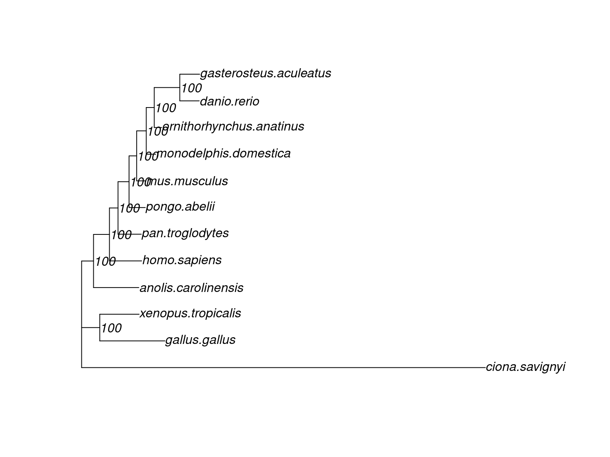

library(here)
library(cogeqc)
library(Biostrings)
library(tidyverse)
library(ape)
library(msa)
set.seed(123) # for reproducibility
options(timeout = 1e8)
source(here("code", "utils.R")) # helper functions1 Phylogenomics
Phylogenomics aims at reconstructing the evolutionary histories of organisms taking into account whole genomes or large fractions of genomes. In this lesson, you will learn how to infer a species tree from whole-genome sequence data using a standard phylogenomics pipeline.
1.1 Goals of this lesson
In this lesson, you will learn to:
- identify single-copy orthologs, typical markers for phylogenomic studies;
- perform multiple sequence alignments;
- infer phylogenetic trees using concatenation-based (Minh et al. 2020) and coalescent-based (Zhang, Sayyari, and Mirarab 2017) approaches;
- read, explore, and visualize phylogenetic trees in R.
We will start by loading the required packages.
1.2 Data acquisition
In this lesson, we will use data from Ensembl (Harrison et al. 2024), a database with genomic data for vertebrate species. However, since using all species on Ensembl would lead to much longer runtimes, we will only use species that are present on Ensembl Pan Compara, a cross-species comparative resource on Ensembl. We will start by retrieving species metadata.
# Get metadata for species on Pan Compara
metadata <- read_tsv(
"https://ftp.ensembl.org/pub/release-113/species_EnsemblVertebrates.txt",
show_col_types = FALSE, col_select = 1:15
) |>
filter(pan_compara == "Y") |>
dplyr::select(1:6)
metadata# A tibble: 12 × 6
`#name` species division taxonomy_id assembly assembly_accession
<chr> <chr> <chr> <dbl> <chr> <chr>
1 Green anole anolis… Ensembl… 28377 AnoCar2… GCA_000090745.2
2 C.savignyi ciona_… Ensembl… 51511 CSAV 2.0 <NA>
3 Zebrafish danio_… Ensembl… 7955 GRCz11 GCA_000002035.4
4 Chicken gallus… Ensembl… 9031 bGalGal… GCA_016699485.1
5 Stickleback gaster… Ensembl… 481459 GAculea… GCA_016920845.1
6 Human homo_s… Ensembl… 9606 GRCh38.… GCA_000001405.29
7 Opossum monode… Ensembl… 13616 ASM229v1 GCA_000002295.1
8 Mouse mus_mu… Ensembl… 10090 GRCm39 GCA_000001635.9
9 Platypus ornith… Ensembl… 9258 mOrnAna… GCA_004115215.2
10 Chimpanzee pan_tr… Ensembl… 9598 Pan_tro… GCA_000001515.5
11 Sumatran orangutan pongo_… Ensembl… 9601 Susie_P… GCA_002880775.3
12 Tropical clawed frog xenopu… Ensembl… 8364 UCB_Xtr… GCA_000004195.4 Then, we will obtain whole-genome protein sequences (only one for each gene) for each species. To do that, we will define a helper function to:
- Read FASTA files directly from Ensembl’s FTP repository as
AAStringSetobjects. - Filter the
AAStringSetobjects to keep only translated sequences of longest transcripts (i.e., one gene -> one protein).
# Define helper function to read proteomes from Ensembl
get_proteomes <- function(species) {
# Get URL to FTP directory
surl <- file.path(
"https://ftp.ensembl.org/pub/release-113/fasta",
species, "pep/"
)
# Get protein sequences of longest transcripts for each gene
seqs <- lapply(surl, function(x) {
## Get links to FASTA files
fname <- XML::getHTMLLinks(RCurl::getURL(x, dirlistonly = TRUE))
fname <- fname[grep("\\.fa\\.gz$", fname)]
fname <- fname[!grepl("abinitio", fname)]
seq_path <- paste0(x, fname)
## Read sequences as an `AAStringSet` object
seq <- Biostrings::readAAStringSet(seq_path)
names(seq) <- gsub(" .*", "", gsub(".*gene:", "", names(seq)))
## Keep only translated sequence of longest transcript
seq <- seq[order(Biostrings::width(seq), decreasing = TRUE)]
seq <- seq[!duplicated(names(seq))]
return(seq)
})
names(seqs) <- gsub("_", "\\.", species)
return(seqs)
}Now, we will actually get the proteomes by executing the function we’ve just defined.
# Get proteomes for all species
proteomes <- get_proteomes(metadata$species)1.3 Obtaining BUSCO genes
Now that we have whole-genome protein sequences for each species, we can run BUSCO to identify single-copy gene families in our proteomes. To do that, BUSCO relies on comparing our sequences with pre-built profile Hidden Markov Models (HMMs) for a particular clade. These profiles HMMs are available for a bunch of different clades (referred to as ‘lineage data sets’), and selecting the right lineage data set is critical to correctly identify single-copy gene families. To view a list of all lineage data sets available in BUSCO, you can run the following code:
# List lineage datasets
cogeqc::list_busco_datasets()As you can see, the lineage data sets in BUSCO have a hierarchical (i.e., tree-like) structure. For example, the lineage vertebrata_odb10 contains two lineages, actinopterygii_odb10 and tetrapoda_odb10. The lineage tetrapoda_odb10, in turn, contains the lineages mammalia_odb10 and sauropsida_odb10. The best lineage data set is usually thought to be the one that includes all species in your data set in the most taxonomically restricted way. This is because the number of BUSCO genes decreases as we go from a broader clade (e.g. Vertebrata) to a stricter clade (e.g. Mammalia). For instance, if your data set contains only mammals, you could use lineages metazoa_odb10, vertebrata_odb10, tetrapoda_odb10, or mammalia_odb10. Let’s see the number of BUSCO genes for each of these clades.
# Plot number of BUSCO genes for clades from metazoa to mammalia
clades <- "metazoa|vertebrata|tetrapoda|mammalia"
p_lineages <- rvest::read_html("https://busco.ezlab.org/list_of_lineages.html") |>
rvest::html_table() |>
purrr::pluck(1) |>
dplyr::rename(lineage = 1, ngenes = 2) |>
filter(str_detect(lineage, clades)) |>
arrange(-ngenes) |>
mutate(lineage = as_factor(lineage)) |>
ggplot(aes(x = ngenes, y = lineage)) +
geom_bar(stat = "identity", fill = "deepskyblue4", color = "black") +
geom_text(aes(label = ngenes), hjust = -0.2) +
scale_x_continuous(limits = c(0, 1.2e4), expand = c(0.01, 0.01)) +
theme_classic() +
labs(
title = "Number of BUSCO genes for each lineage",
x = "Number of genes", y = "Lineage"
)
p_lineagesThe plot shows that more restrict clades have more BUSCO genes. Thus, if you want to infer a phylogeny for some mammals, you should choose mammalia_odb10 as your lineage data set, not broader clades that include other things beside mammals (e.g. vertebrata_odb10 or metazoa_odb10).
The example data set in this lesson contains a diverse set of animals, most of which are vertebrates, but also with the tunicate Ciona savignyi (outgroup). Given this data set (vertebrates + a tunicate), the best lineage data set is metazoa_odb10.
To identify what BUSCO genes can be found in our data set, we can use the function run_busco from the R package cogeqc to run BUSCO in protein mode using metazoa_odb10 as lineage data set. However, because running BUSCO takes several minutes, we will load a pre-computed set of BUSCO genes identified in this data set.
# Load pre-computed BUSCO genes
busco_genes <- readRDS(here("output", "busco_seqs.rds"))The file busco_seqs.rds was created with the code below, which does the following:
- Run BUSCO in
proteinmode using metazoa_odb10 as lineage data set. - Identify BUSCO genes that are shared by all species (i.e., species coverage of 100%);
- Read sequences of conserved BUSCO genes as a list of
AAStringSetobjects, each containing 12 sequences (the BUSCO gene i in all 12 species).
Show me the code
# Export sequences to a directory
seq_dir <- file.path(tempdir(), "seqs")
dir.create(seq_dir)
e <- lapply(seq_along(proteomes), function(x) {
fn <- file.path(seq_dir, paste0(names(proteomes)[x], ".fasta"))
writeXStringSet(proteomes[[x]], filepath = fn)
})
# Run BUSCO in `protein` mode
busco_output <- file.path(tempdir(), "busco") # path to BUSCO output
data_output <- file.path(tempdir(), "datasets") # path to BUSCO datasets
cogeqc::run_busco(
sequence = seq_dir,
outlabel = "ensembl",
mode = "proteins",
lineage = "metazoa_odb10",
outpath = busco_output,
download_path = data_output,
threads = 4
)
# Read sequences of BUSCO genes
busco_seqdir <- file.path(busco_output, "ensembl")
busco_seqs <- read_busco_sequences(busco_seqdir)
# Save object to file
saveRDS(busco_seqs, compress = "xz", file = here("output", "busco_seqs.rds"))This is what the object looks like:
# Take a look at the first 3 BUSCO genes
head(busco_genes, 3)$`102804at33208`
AAStringSet object of length 12:
width seq names
[1] 1050 MALSLDREAYYRRIKRLYSNWQK...HHRSSHSRSPGRSSAPPKKKRK anolis.carolinensis
[2] 1040 MSISLDKDAFFRRLKKIYSTWES...SDDDEGETMRRVGRIGMNWRRR ciona.savignyi
[3] 1033 MAVSLDKDAFYRRIKRLYGNWKK...SNRKRKGRSSAPPPRSKKKRRH danio.rerio
[4] 642 MEAVRKQKPELMAKITKNLGFAM...GRWGRWGRWGRWGHWGCWGQWG gallus.gallus
[5] 938 MAVNLDKEAYYRRIKRFYGNWKK...EDSDEDYDSDTEDSSEILLFGH gasterosteus.acul...
... ... ...
[8] 1047 MAVTLDKDAYYRRVKRLYSNWRK...SSGRGSNRGSRHSSAPPKKKRK mus.musculus
[9] 1047 MAVTLDKEAYYRRVKRLYSNWRK...SSGRGSGRGSRHSSAPPKKKRK ornithorhynchus.a...
[10] 1047 MAVTLDKDAYYRRVKRLYSNWRK...SSGRGSNRGSRHSSAPPKKKRK pan.troglodytes
[11] 1047 MAVTLDKDAYYRRVKRLYSNWRK...SSGRGSNRGSRHSSAPPKKKRK pongo.abelii
[12] 1035 MAVTLDKEAYYRRIKRFYGNWKK...QKGGKKRKVHAPAPNPSKKRKK xenopus.tropicalis
$`107151at33208`
AAStringSet object of length 12:
width seq names
[1] 988 MAAAAASSSASGASSSSSSGPGG...NNWQSKIGEILVLVAAKIKNTF anolis.carolinensis
[2] 739 NRSFHPQFSGYAGNLFSSGPYEK...KNWKLKTKELLPIISSKVPVAF ciona.savignyi
[3] 974 MASSAAKQPPKNASKAPSGGAGG...LNWQKNIGEILVLVASKIKNSF danio.rerio
[4] 999 MNKKKKPFLGMPAPLGYVPGLGR...VNWQKKIGEILVLVAAKLKNTF gallus.gallus
[5] 973 MASTGIKQGPKLVSKSSAGGAGA...TVSRTSRSAVSRSVFPLKSITV gasterosteus.acul...
... ... ...
[8] 941 MNKKKKPFLGMPAPLGYVPGLGR...TNWQRKIGEILVLVAARIKNTF mus.musculus
[9] 941 MNKKKKPFLGMPAPLGYVPGLGR...ENWQKKIGEILVLVAAKIKNAF ornithorhynchus.a...
[10] 941 MNKKKKPFLGMPAPLGYVPGLGR...ANWQKKIGDILRLVAGRIKNTF pan.troglodytes
[11] 964 MTLQNYYYYYYYYFFFFETKSCS...ANWQKKIGDILRLVAGRIKNTF pongo.abelii
[12] 972 MAASVSAGSGAGPSGSGNPTGTS...KNWQQKIGEILVLVAAQIKNAF xenopus.tropicalis
$`108764at33208`
AAStringSet object of length 12:
width seq names
[1] 947 MSGFSPELIEYLEGKISFEEFER...RGGELAGSDRWCCLSFSEEQKP anolis.carolinensis
[2] 771 SRLPRELRGLMGEANLCYARGDH...LIYRKSGNIDLANQTIHKYCVV ciona.savignyi
[3] 918 MSELNDYLEGKITFEEFEKRREE...LIYQSSGNKDMARHIIYTYCTI danio.rerio
[4] 927 MSGFSPELIDYLEGKISFEEFER...LIYHSSGNTRMAQKMLYTYAVV gallus.gallus
[5] 944 MSGFSSELIDYLEGRITFEEFDQ...LIYQASGNMGMAHQLINTHCII gasterosteus.acul...
... ... ...
[8] 882 MSGFSPELIDYLEGKISFEEFER...LIYQSSGNTAMAQKLLYTYCVI mus.musculus
[9] 899 MSGFSPELIDYLEGKISFEEFER...LIYQNSGNLGLARRLLYTWGSV ornithorhynchus.a...
[10] 884 MSGFSPELIDYLEGKISSSSSNG...LIYQSSGNTGMAQTLLYTYCSI pan.troglodytes
[11] 885 MSGFSPELIDYLEGKISFEEFER...LIYQSSGNTGMAQRLLYTYCSI pongo.abelii
[12] 880 MSGFSPELIDYLEGKISFEEFER...LIYQNSGNLEMARRLLHQYCVS xenopus.tropicalis# Check number of genes
length(busco_genes)[1] 282As you can see, we found 282 BUSCO genes shared by all 12 species in our data set. These 282 genes represent our marker gene set for phylogeny inference.
1.4 Multiple sequence alignment
Once we have our marker genes, we can perform a multiple sequence alignment (MSA) and use the MSA to infer a phylogeny.
# Perform MSA for each BUSCO gene with MUSCLE
msas <- lapply(busco_genes, msa, method = "Muscle")
# Convert MSAs to `AAStringSet` class
msas_aa <- lapply(msas, as, "AAStringSet")Let’s take a look at the first few MSAs to see what they look like.
# Take a look at the MSAs for the first 3 genes
head(msas_aa, 3)$`102804at33208`
AAStringSet object of length 12:
width seq names
[1] 1123 MSISLDKDAFFRRLKKIYSTWES...-------------------RRR ciona.savignyi
[2] 1123 -----------------------...WGQWG----------------- gallus.gallus
[3] 1123 MAVTLDKEAYYRRIKRFYGNWK-...-----------PAPNPSKKRKK xenopus.tropicalis
[4] 1123 MALSLDREAYYRRIKRLYSNWQ-...HHRSSHSRSPGRSSAPPKKKRK anolis.carolinensis
[5] 1123 MAVTLDKDAYYRRVKRLYSNWR-...R---GSNRGSRHSSAPPKKKRK homo.sapiens
... ... ...
[8] 1123 MAVTLDKDAYYRRVKRLYSNWR-...R---GSNRGSRHSSAPPKKKRK mus.musculus
[9] 1123 MAVTLDKEAYYRRVKRLYSNWR-...R---GSSRGSRHSSAPPKKKRK monodelphis.domes...
[10] 1123 MAVTLDKEAYYRRVKRLYSNWR-...R---GSGRGSRHSSAPPKKKRK ornithorhynchus.a...
[11] 1123 MAVSLDKDAFYRRIKRLYGNWK-...-------RSSAPPPRSKKKRRH danio.rerio
[12] 1123 MAVNLDKEAYYRRIKRFYGNWK-...---------------------- gasterosteus.acul...
$`107151at33208`
AAStringSet object of length 12:
width seq names
[1] 1062 -----------------------...LLPII--SSKVPVAF------- ciona.savignyi
[2] 1062 -----MASTGIKQGPKLVSKSSA...TVSRTSRSAVSRSVFPLKSITV gasterosteus.acul...
[3] 1062 -----MASSAAKQPPKNASKAPS...ILVLV--ASKIKNSF------- danio.rerio
[4] 1062 -------MAASVSAGSGAGPSGS...ILVLV--AAQIKNAF------- xenopus.tropicalis
[5] 1062 MTLQNYYYYYYYYFFFFETKSCS...ILRLV--AGRIKNTF------- pongo.abelii
... ... ...
[8] 1062 -----------------------...ILVLV--AARIKNTF------- mus.musculus
[9] 1062 -----------------------...ILVLV--AAKLKNTF------- gallus.gallus
[10] 1062 -----MAAAAASSSASGASSSSS...ILVLV--AAKIKNTF------- anolis.carolinensis
[11] 1062 -----------------------...IYII------------------ monodelphis.domes...
[12] 1062 -----------------------...ILVLV--AAKIKNAF------- ornithorhynchus.a...
$`108764at33208`
AAStringSet object of length 12:
width seq names
[1] 1050 -----------------------...LANQTI--HKYCVV-------- ciona.savignyi
[2] 1050 MSGFSSELIDYLEGRITFEEFDQ...MAHQLI--NTHCII-------- gasterosteus.acul...
[3] 1050 ----MSELNDYLEGKITFEEFEK...MARHII--YTYCTI-------- danio.rerio
[4] 1050 MSGFSPELIDYLEGKISFEEFER...MARRLL--HQYCVS-------- xenopus.tropicalis
[5] 1050 MSGFSPELIDYLEGKISFEEFER...LARRLL--YTWGSV-------- ornithorhynchus.a...
... ... ...
[8] 1050 MSGFSPELIDYLEGKISFEEFER...MARKLL--YTYGTI-------- monodelphis.domes...
[9] 1050 MSGFSPELIDYLEGKISFEEFER...MAQKLL--YTYCVI-------- mus.musculus
[10] 1050 MSGFSPELIDYLEGKIS----SS...MAQTLL--YTYCSI-------- pan.troglodytes
[11] 1050 MSGFSPELIDYLEGKISFEEFER...MAQTLL--YTYCSI-------- homo.sapiens
[12] 1050 MSGFSPELIDYLEGKISFEEFER...MAQRLL--YTYCSI-------- pongo.abeliiYou can also use the function
msaPrettyPrint() from the ggmsa package to visualize the MSA. This function will create a PDF in your working environment with a publication-ready figure (often with multiple pages, as MSAs are typically long) displaying your MSAI guess you can see that some alignments have columns with a lot of gaps. Since these are usually not much informative for phylogeny inference, it is common practice to remove MSA columns with too many gaps. This process is called ‘trimming’. Here, we will the helper function trim_alignment() (source code in file utils.R) to remove alignment columns with >50% of gaps.
# Trim MSAs with remove columns with >50% of gaps
trimmed_msas <- lapply(msas_aa, trim_alignment, max_gap = 0.5)
# Take a look at trimmed MSAs
head(trimmed_msas, 3)$`102804at33208`
AAStringSet object of length 12:
width seq names
[1] 1047 MSISLDKDAFFRRLKKIYSTWEN...-------------------RRR ciona.savignyi
[2] 1047 -----------------------...WGCWG----------------- gallus.gallus
[3] 1047 MAVTLDKEAYYRRIKRFYGNWKK...-----------PAPNPSKKRKK xenopus.tropicalis
[4] 1047 MALSLDREAYYRRIKRLYSNWQK...SSGHSHSRSPGRSSAPPKKKRK anolis.carolinensis
[5] 1047 MAVTLDKDAYYRRVKRLYSNWRK...SSGRGSNRGSRHSSAPPKKKRK homo.sapiens
... ... ...
[8] 1047 MAVTLDKDAYYRRVKRLYSNWRK...SSGRGSNRGSRHSSAPPKKKRK mus.musculus
[9] 1047 MAVTLDKEAYYRRVKRLYSNWRK...SSGRGSSRGSRHSSAPPKKKRK monodelphis.domes...
[10] 1047 MAVTLDKEAYYRRVKRLYSNWRK...SSGRGSGRGSRHSSAPPKKKRK ornithorhynchus.a...
[11] 1047 MAVSLDKDAFYRRIKRLYGNWKK...-------RSSAPPPRSKKKRRH danio.rerio
[12] 1047 MAVNLDKEAYYRRIKRFYGNWKK...---------------------- gasterosteus.acul...
$`107151at33208`
AAStringSet object of length 12:
width seq names
[1] 941 -----------------------...KNWKLKTKELLPIISSKVPVAF ciona.savignyi
[2] 941 MGKKKKPFLGMPAPLGYVPGLGR...NTWRTWSCETVSRTSAVSRSVF gasterosteus.acul...
[3] 941 LNKKKKPFLGMPAPLGYVPGLGR...LNWQKNIGEILVLVASKIKNSF danio.rerio
[4] 941 MNKKKKPFLGMPAPLGYVPGLGR...KNWQQKIGEILVLVAAQIKNAF xenopus.tropicalis
[5] 941 --QWRDLIIQTPGVL----GVSC...ANWQKKIGDILRLVAGRIKNTF pongo.abelii
... ... ...
[8] 941 MNKKKKPFLGMPAPLGYVPGLGR...TNWQRKIGEILVLVAARIKNTF mus.musculus
[9] 941 MNKKKKPFLGMPAPLGYVPGLGR...VNWQKKIGEILVLVAAKLKNTF gallus.gallus
[10] 941 MNRKKKPFLGMPAPLGYVPGLGR...NNWQSKIGEILVLVAAKIKNTF anolis.carolinensis
[11] 941 MNKKKKPFLGMPAPLGYVPGLGR...---KEQVSNIYII--------- monodelphis.domes...
[12] 941 MNKKKKPFLGMPAPLGYVPGLGR...ENWQKKIGEILVLVAAKIKNAF ornithorhynchus.a...
$`108764at33208`
AAStringSet object of length 12:
width seq names
[1] 902 -----------------------...LIYRKSGNIDLANQTIHKYCVV ciona.savignyi
[2] 902 MSGFSSELIDYLEGRITFEEFDQ...LIYQASGNMGMAHQLINTHCII gasterosteus.acul...
[3] 902 ----MSELNDYLEGKITFEEFEK...LIYQSSGNKDMARHIIYTYCTI danio.rerio
[4] 902 MSGFSPELIDYLEGKISFEEFER...LIYQNSGNLEMARRLLHQYCVS xenopus.tropicalis
[5] 902 MSGFSPELIDYLEGKISFEEFER...LIYQNSGNLGLARRLLYTWGSV ornithorhynchus.a...
... ... ...
[8] 902 MSGFSPELIDYLEGKISFEEFER...LIYQSSGNMGMARKLLYTYGTI monodelphis.domes...
[9] 902 MSGFSPELIDYLEGKISFEEFER...LIYQSSGNTAMAQKLLYTYCVI mus.musculus
[10] 902 MSGFSPELIDYLEGKIS----SS...LIYQSSGNTGMAQTLLYTYCSI pan.troglodytes
[11] 902 MSGFSPELIDYLEGKISFEEFER...LIYQSSGNTGMAQTLLYTYCSI homo.sapiens
[12] 902 MSGFSPELIDYLEGKISFEEFER...LIYQSSGNTGMAQRLLYTYCSI pongo.abeliiNow that we have trimmed MSAs, we can use them to infer a phylogeny.
1.5 Phylogeny inference: concatenation-based approaches
The simplest way of inferring a phylogeny from phylogenomic (i.e. multi-gene) data sets is to concatenate MSAs for each gene into a single MSA, and then infer a phylogeny as you’d do for a single MSA. This concatenated MSA is often referred to as a ‘supermatrix’, which is why this approach is usually called ‘supermatrix-based’, or ‘concatenation-based’.
To demonstrate how this works, we will concatenate MSAs and infer a species tree using IQ-TREE 2 (Minh et al. 2020). For that, we will use a helper function infer_species_tree() (source code in utils.R), which runs IQ-TREE 2 from the R session and reads the inferred tree as an object of class phylo (standard class to represent trees in R, from the ape package).
# Concatenate alignments
conc_msa <- Reduce(xscat, trimmed_msas)
names(conc_msa) <- names(trimmed_msas[[1]])
# Take a look at the concatenated alignment
head(conc_msa)
# Infer species tree from concatenated alignment
outgroup <- "ciona.savignyi"
tree_conc <- infer_species_tree(
list(conc = conc_msa),
outgroup,
threads = 4
)The tree inferred from the concatenated alignment is stored in output/trees/supermatrix.treefile, and the output file with a detailed summary (models and AICs/BICs, base frequencies, etc) is stored in output/trees/supermatrix.iqtree. To load a phylogenetic tree from a file, you can use the function read.tree() from the R package ape.
# Read tree as a `phylo` object
tree_conc <- read.tree(here("output", "trees", "supermatrix.treefile"))
# Plot tree
plot(tree_conc)
1.6 Phylogeny inference: coalescent-based approaches
Here, instead of inferring a single tree from concatenated MSAs, we will infer an individual tree for each BUSCO gene. We will then use these set of trees to calculate concordance factors and use coalescent-based approaches.
# Infer single-locus trees
outgroup <- "ciona.savignyi"
tree_sl <- infer_singlelocus_trees(
trimmed_msas,
outgroup,
outdir = here("output", "sl_trees"),
threads = 4
)Now, we will read the output tree file. Since this is not one, but many trees, trees will be stored in an object of class multiPhylo. In essence, a multiPhylo object is a list of multiple phylo objects.
# Read tree
tree_sl <- read.tree(here("output", "sl_trees", "sl.treefile"))
tree_sl282 phylogenetic treesNext, we will infer a species tree from this set of gene trees using ASTRAL (Zhang, Sayyari, and Mirarab 2017), a Java program that can be run on the command line using the following code:
java -jar astral.5.7.8.jar -i sl.treefile -o astral.treeThen, we can read the species tree created by ASTRAL. Note that ASTRAL is a coalescent-based method that uses parsimony principles to infer a single species tree from a set of (many) gene trees.
# Read species tree created with ASTRAL
astral_tree <- read.tree(here("output", "sl_trees", "astral.tree"))
# Plot tree
plot(astral_tree)Finally, once we have a representative species tree (generated by ASTRAL) and multiple gene trees (generated by IQ-TREE 2), we can calculate so-called gene concordance factors (gCF), which represent the proportion of decisive gene trees that support each branch of the species tree. These can be computed with the code below
# Calculate gCF with IQ-TREE 2
args <- c(
"-t", here("output", "sl_trees", "astral.tree"),
"--gcf", here("output", "sl_trees", "sl.treefile"),
"--prefix", here("output", "sl_trees", "gcf")
)
system2("iqtree2", args)Then, we can read the tree and explore the tree with gCF for each branch with:
# Read tree with gCF
gcf_tree <- read.tree(here("output", "sl_trees", "gcf.cf.tree"))
plot(gcf_tree, show.node.label = TRUE)Session information
This document was created under the following conditions:
sessionInfo()R version 4.4.1 (2024-06-14)
Platform: x86_64-pc-linux-gnu
Running under: Ubuntu 22.04.4 LTS
Matrix products: default
BLAS: /usr/lib/x86_64-linux-gnu/blas/libblas.so.3.10.0
LAPACK: /usr/lib/x86_64-linux-gnu/lapack/liblapack.so.3.10.0
locale:
[1] LC_CTYPE=en_US.UTF-8 LC_NUMERIC=C
[3] LC_TIME=nl_BE.UTF-8 LC_COLLATE=en_US.UTF-8
[5] LC_MONETARY=nl_BE.UTF-8 LC_MESSAGES=en_US.UTF-8
[7] LC_PAPER=nl_BE.UTF-8 LC_NAME=C
[9] LC_ADDRESS=C LC_TELEPHONE=C
[11] LC_MEASUREMENT=nl_BE.UTF-8 LC_IDENTIFICATION=C
time zone: Arctic/Longyearbyen
tzcode source: system (glibc)
attached base packages:
[1] stats4 stats graphics grDevices utils datasets methods
[8] base
other attached packages:
[1] msa_1.36.1 ape_5.8 lubridate_1.9.3
[4] forcats_1.0.0 stringr_1.5.1 dplyr_1.1.4
[7] purrr_1.0.2 readr_2.1.5 tidyr_1.3.1
[10] tibble_3.2.1 ggplot2_3.5.1 tidyverse_2.0.0
[13] Biostrings_2.72.1 GenomeInfoDb_1.40.1 XVector_0.44.0
[16] IRanges_2.38.1 S4Vectors_0.42.1 BiocGenerics_0.50.0
[19] cogeqc_1.8.0 here_1.0.1
loaded via a namespace (and not attached):
[1] tidyselect_1.2.1 farver_2.1.2 vipor_0.4.7
[4] fastmap_1.2.0 lazyeval_0.2.2 promises_1.3.0
[7] digest_0.6.36 timechange_0.3.0 lifecycle_1.0.4
[10] processx_3.8.4 tidytree_0.4.6 magrittr_2.0.3
[13] compiler_4.4.1 rlang_1.1.4 tools_4.4.1
[16] igraph_2.0.3 utf8_1.2.4 yaml_2.3.9
[19] knitr_1.48 labeling_0.4.3 htmlwidgets_1.6.4
[22] bit_4.0.5 curl_5.2.1 xml2_1.3.6
[25] plyr_1.8.9 websocket_1.4.2 aplot_0.2.3
[28] withr_3.0.0 grid_4.4.1 fansi_1.0.6
[31] colorspace_2.1-0 scales_1.3.0 cli_3.6.3
[34] rmarkdown_2.27 crayon_1.5.3 treeio_1.28.0
[37] generics_0.1.3 rstudioapi_0.16.0 ggtree_3.12.0
[40] httr_1.4.7 reshape2_1.4.4 tzdb_0.4.0
[43] chromote_0.3.1 ggbeeswarm_0.7.2 cachem_1.1.0
[46] zlibbioc_1.50.0 rvest_1.0.4 parallel_4.4.1
[49] ggplotify_0.1.2 BiocManager_1.30.23 yulab.utils_0.1.4
[52] vctrs_0.6.5 jsonlite_1.8.8 gridGraphics_0.5-1
[55] hms_1.1.3 patchwork_1.2.0 bit64_4.0.5
[58] beeswarm_0.4.0 glue_1.7.0 ps_1.7.7
[61] stringi_1.8.4 gtable_0.3.5 later_1.3.2
[64] UCSC.utils_1.0.0 munsell_0.5.1 pillar_1.9.0
[67] htmltools_0.5.8.1 GenomeInfoDbData_1.2.12 R6_2.5.1
[70] rprojroot_2.0.4 vroom_1.6.5 evaluate_0.24.0
[73] lattice_0.22-6 BiocStyle_2.32.1 memoise_2.0.1
[76] ggfun_0.1.5 Rcpp_1.0.13 nlme_3.1-165
[79] xfun_0.46 fs_1.6.4 pkgconfig_2.0.3 References
Harrison, Peter W, M Ridwan Amode, Olanrewaju Austine-Orimoloye, Andrey G Azov, Matthieu Barba, If Barnes, Arne Becker, et al. 2024. “Ensembl 2024.” Nucleic Acids Research 52 (D1): D891–99.
Minh, Bui Quang, Heiko A Schmidt, Olga Chernomor, Dominik Schrempf, Michael D Woodhams, Arndt Von Haeseler, and Robert Lanfear. 2020. “IQ-TREE 2: New Models and Efficient Methods for Phylogenetic Inference in the Genomic Era.” Molecular Biology and Evolution 37 (5): 1530–34.
Zhang, Chao, Erfan Sayyari, and Siavash Mirarab. 2017. “ASTRAL-III: Increased Scalability and Impacts of Contracting Low Support Branches.” In RECOMB International Workshop on Comparative Genomics, 53–75. Springer.